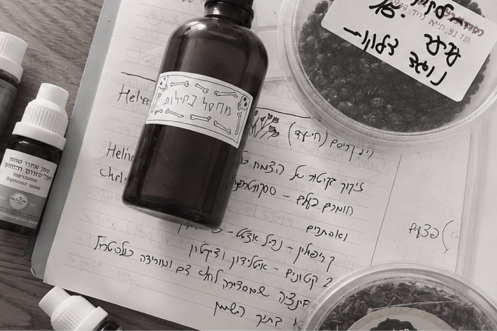
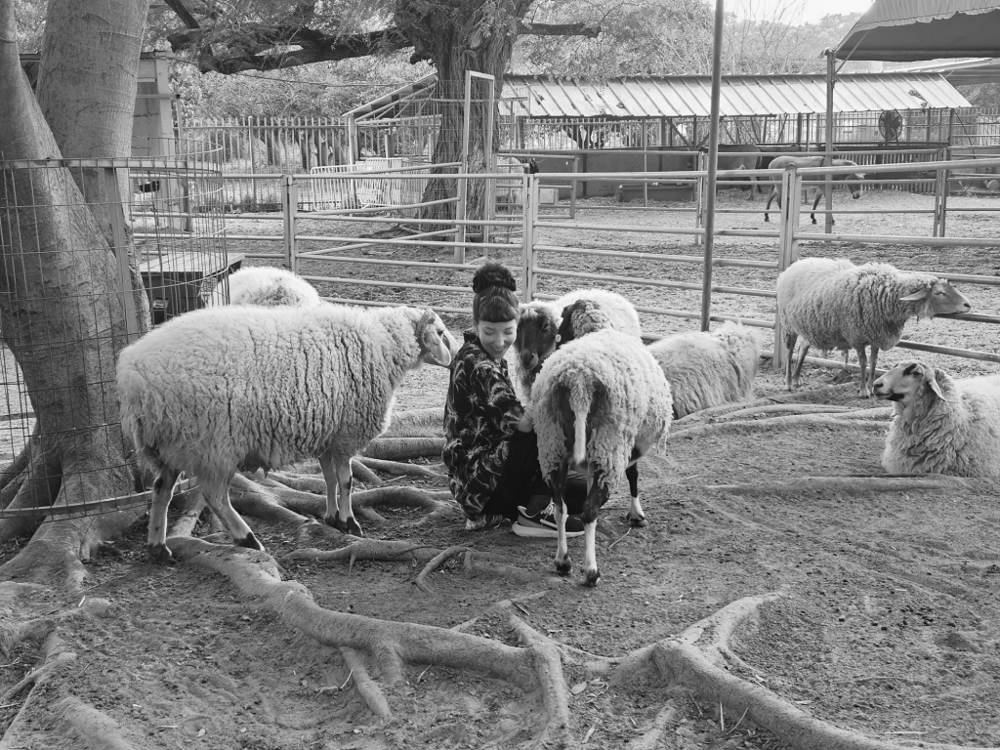

Hey! I'm Roni, a senior product designer, curious person, and someone who cares a lot about how things feel.

Hi 👋
I like taking a vague problem, giving it shape, and staying with it until the details survive launch. I care deeply about the work, but I'm not precious about my first idea.

There's probably an oil for that.
I probably have it.
I have strong opinions about horror movies, synthesizers, and DOS games. During one of the COVID lockdowns, I completed the entire Jill of the Jungle trilogy on my TV with a wireless keyboard.
I also take karaoke very seriously.

I get attached easily - to people and to animals.
This is, in my humble opinion, the correct sheep-to-person ratio.
Selected work from Houzz Pro
Three projects on 3D Floor Plans, from capturing a space to presenting it at full scale.
Product context →Turning room-by-room scans into one connected floor plan
Mobile capture, in-scan interactions, and a connected multi-room flow.
02 Build & Refine· WebGuiding users through a complex floor-planning workspace
Onboarding that teaches the tools by doing, toward a first finished plan.
03 Present· Mobile ARFrom floor plan to life-sized walkthrough
An AR experience that places the proposal in the room at full scale.
Let's talk
Always happy to talk about design, products, or an unnecessarily specific opinion.